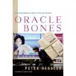
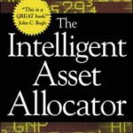
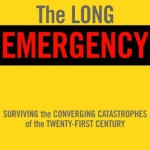

12.31.12
Posted in books, personal at 11:54 am by danvk
A few personal highlights from 2012:
I traveled all over the place this year. Some highlights:
I took a three-month sabbatical from work during May, June and July. Some highlights from that:
I also spent a lot of time working on personal projects this year. A few highlights:
Books I read in 2012:
And a few other miscellaneous things:
Permalink
08.19.11
Posted in books, personal at 4:19 pm by danvk
I recently finished The Power Broker, Robert Caro’s critically-acclaimed biography of New York Master Builder Robert Moses. At 1200 pages, it’s an undertaking. But I’d highly recommend it if you live in the New York area.
One passage about Moses’ daily routine struck me:
A third feature of Moses’ office was his desk. It wasn’t a desk but rather a large table. The reason was simple: Moses did not like to let problems pile up. If there was one on his desk, he wanted it disposed of immediately. Similarly, when he arrived at his desk in the morning, he disposed of the stacks of mail awaiting him by calling in secretaries and going through the stacks, letter by letter, before he went on to anything else. Having a table instead of a desk was an insurance that this procedure would be followed. Since a table has no drawers, there was no place to hide papers; there was no escape from a nagging problem or a difficult-to-answer letter except to get rid of it in one way or another. And there was another advantage: when your desk was a table, you could have conferences at it without even getting up. (p. 268)
Moses’ approach to snail mail sounds a lot like the “Getting Things Done” approach to email: make your inbox a to-do list and keep it empty. Moses wouldn’t do anything until his mail was cleared. He wouldn’t let tasks pile up, so he always had a clean plate every day. He even tailored his office to enforce this workflow.
I’ve been trying the Moses technique on my work inbox recently. When I arrive in the morning, I deal with all the emails waiting for me. No excuses. No starring and leaving the message as a “to-do” in the bottom of my inbox. There are many emails/tasks that I’d prefer to ignore, but it turns out that most of them only require ten minutes of work to deal with completely.
So far, this is working well for me. But will I be able to keep it up? Robert Moses did for forty years, so there’s hope!
Permalink
12.30.09
Posted in books, personal at 10:00 am by danvk
As part of my 2009 year-in-review, I tried to make a list of all the books I’d read. Give it a shot for yourself, this is hard to do! I can remember what I’ve read in the last few months, but my memory starts to fade as I get towards summer. I found a few books from the start of the year via Amazon receipts and library records, but I’m sure there are many I missed.
Here’s the list, with a few thoughts about each.
Oracle Bones, Peter Hessler
A follow-up to River Town, this book chronicles Hessler’s time in China as a journalist. Both books offer a great impression of life in China, though this one started to drag on a bit towards the end. Highlights: his discussion of the alphabetization of Chinese and his interactions with Polat, the Uighur trader who wants to emigrate to America.
Better: A Surgeon’s Notes on Performance, Atul Gawande
This book fits neatly in the “find six interesting stories and give them a catchy one-word title” genre pioneered by books like Freakonomics. But the stories here are very interesting! And the thesis is, too. In medicine (and presumably elsewhere), there are huge gains to made through non-technological means. Apgar scores reduced child mortality by making it easier to test the efficacy of treatments and changing perceptions about which babies could live. Changed expectations and the sharing of case histories had dramatic effects on the life expectancy of Cystic Fibrosis patients.
Guns, Germs, Steel, Jered Diamond
My thoughts on why this is a really bad book are documented in another blog post.
The Botany of Desire, Michael Pollan
As always, Michael Pollan treads that fine line between greatness and wishy-washiness. The Omnivore’s Dilemma was great. In Defense of Food was not. This book is somewhere in between. At least Michael Pollan is always honest, a welcome change after reading Jered Diamond. His researches into Johnny Appleseed were particularly fun to read. I’d never thought about this historical figure.
The Book Nobody Read, Owen Gingerich
After reading Koestler describe Copernicus’s De Revolutionibus as “the book that nobody read”, Gingerich sets out to find every extant copy and document the marginalia — evidence of who read the book and what they thought. Part of what makes this book fun is just what a quintessential academic Gingerich is. The one thing lacking is any discussion of where Copernicus got his ideas from. This book also implicitly makes a strong argument for digitizing books: think how easy his quest would have been if he’d had search!
The watershed; a biography of Johannes Kepler, Arthur Koestler
A 250-page excerpt from the book with which Gingerich took issue. I’d always though of Kepler as the first astronomer who really “got it”. His three laws cleared away millenia of intellectual baggage. If nothing else, this book rid me of that delusion. Kepler is a really frustrating figure. He is spectacularly modern in some senses, but frustratingly medieval in others. He certainly did not consider the three laws for which we remember him his most significant contribution to science. Koestler clearly has an agenda, but I didn’t find it too distracting.
Scourge: The Once and Future Threat of Smallpox, Jonathon Tucker
A really fun read. The eradication of smallpox was one of the most significant technological feats of the 20th century, and yet I’d never heard/read anything about it before. There are many great stories in the final steps towards eradication. I learned a lot about disease and pathogens from this book.
Paris from the Ground Up, James H. S. McGregor
I read this on the way to Paris. It gave me a great sense of the city: where things were, what the significant sights were, why they were significant, etc. It follows a bizarre chronological cross thematic progression as you read which I found confusing at first, but ultimately enjoyed. If you’re going to Paris and want to have to have some context for what you’ll be seeing, this is a great book to read!
The Crowded Universe: The Search for Living Planets, Alan Boss
This book chronicles the hunt for extra-solar planets between 1998 and 2008, a time during which this area exploded. It reads like a blog, with dated entries any time something interesting occurred. I wrote the author and suggested he start a blog, but he didn’t want to lose the potential revenue from another book ten years from now. NASA does not come across well in this book. The trials and tribulations of what became the Kepler Mission span the whole time frame.
The Intelligent Asset Allocator, William Bernstein
This is really close to the ideal personal finance book that I’d like to read. Whereas A Random Walk Down Wall Street explains why you should index, this book talks about how you should allocate assets between bonds, stocks, real estate, etc. It’s not particularly prescriptive — it won’t say “you should be 75% stocks and 25% bonds” — but at least it gives a good background on the issues involved. Basic upshot: some diversification is always a good idea.
The Long Emergency, James Kunstler
This book is bad, bad, bad. Kunstler’s argument is that our society is so deeply dependent on oil that, once we run out, the effects will be completely catastrophic. Large swaths of the United States will become uninhabitable. Much of modern agriculture is dependent on fossil fuel-based fertilizers, so billions of people will starve to death as earth’s carrying capacity plummets. Kunstler loves laying out doom and gloom scenarios. The problem is that he can’t be bothered to explain why they’re inevitable. There are zero charts or tables in this book, and his dismissal of technological solutions as cornucopianism is infuriating. See my thoughts on Guns, Germs, Steel for what it’s like to read a non-fiction book where you feel actively mislead.
Permalink
01.01.08
Posted in books, reviews, tennis at 7:55 pm by danvk
(See also podcasts and TV shows)
While podcasts are great for the daily commute, books work pretty well, too. That 2+ hour daily commute translates into a huge number of pages. Most of these are books I read in the latter half of the year.
I’m too lazy to include images this time, but I included two bonus faves at the end to make up for it.
The Omnivore’s Dilemma
Michael Pollan
This book really opened my eyes to how agriculture and the food industry in the United States work. Pollan follows four “food chains” from bottom to top: garden-variety industrial, organic, local and “hunter-gathered”, meeting unforgettable characters along the way. I’ve been reminded many times this year just how much I learned from this book.
Great Expectations
Charles Dickens
It’s almost impossible to believe that I read this book in High School, given how little (i.e. major plot points) I remembered a second time around. I enjoyed the book much more this time around. This is mostly because I’ve had more experiences in my life now than I’d had ten years ago. Having had relationships and having moved from home into the unknown, I found it easy to relate to Pip’s changing fortunes. Estella is the most memorable character. “He calls the knaves Jacks, he does!”
King Leopold’s Ghost
Adam Hochschild
I’d heard “the race for Africa” referenced before reading this book, but never fully understood why it was such a catastrophe. This is an in-depth look at one aspect of it, the exploitation of the Congo by King Leopold’s Belgium for ivory and rubber. This was an extremely educational book for me. It’s a great look into how the world worked in the Guilded Age, as it helped me understand some of Africa’s problems today. One nit, though: Hochschild is inconsistent in whether he judges people by the norms of their own day versus our own. He finds the racism of many of his heroes understandable for its time, but Leopold is always presented as a modern man scheming to exploit the Congolese.
A Moveable Feast
Ernest Hemingway
I heard about this at a Hemingway-themed party and greatly enjoyed it. Though it was published after his death, it recounts Hemingway’s time in Paris in the 1920′s. He has great stories to tell about all the famous writers and groups of the time, and his style works perfectly for this short read.
The Autobiography of Malcolm X
Malcolm X, Alex Haley
Malcolm X lived one of the seminal lives of the 20th century: his father was murdered by the KKK (it was ruled a suicide), he led a colorful life of crime during the Harlem Renaissance, became an influential leader of the Nation of Islam and was assassinated. If you’re not up for reading the book, the Spike Lee movieis fantastic.
OK, now the bonuses! Here are two articles I’ve enjoyed this year that you can read online:
Permalink
11.26.07
Posted in books, personal at 8:19 pm by danvk
It set at 4:53 PM today. And it’s only going to get worse over the next month, as we head towards the winter solstice on December 21.
For some perspective, check out Graham Robb’s excellent New York Times op-ed piece on human hibernation, The Big Sleep. Well into the 19th century, people in the European countryside went into partial hibernation during the winter. Robb’s book is near the top of my reading list.
Permalink
« Previous entries
Next Page »